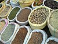

grain
phenomenon

Source: Wikipedia
Wikipedia Page (Something wrong with this association? Let us know.)
Wikidata Page (Something wrong with this association? Let us know.)
Occurs in:
- channel_bottom_sediment_grain_water__hydraulic_conductivity
- channel_bottom_sediment_grain__d50_diameter
- channel_bottom_sediment_grain__d84_diameter
- channel_bottom_water_sediment_grain_flowing__shields_critical_shear_stress
- channel_bottom_water_sediment_grain_flowing__shields_parameter
- channel_water_sediment_grain_settling__stokes_terminal_speed
- channel_water_sediment~bedload~immersed_grain__weight
- river-delta_channel~main_entrance_water_sediment_sand_grain__mean_of_diameter
- river-delta_front_sediment_grain__mean_of_diameter
- sea_bottom_sediment_grain__mean_of_diameter
- water_sand_grain_settling__terminal_speed